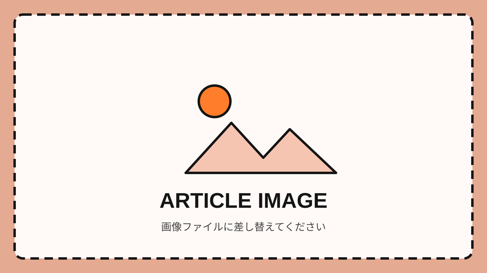

このテンプレートの使い方
- このファイルを複製し、半角英数字の名前（例：
article-denim.html）にします。 - ファイル内の
【ここに〜】を上から順番に、自分の記事へ置き換えます。 - サムネ・本文写真は
imagesフォルダへ入れ、画像のsrcとaltを変更します。 - 目次リンクの
href="#名前"と見出しのid="名前"は、同じ名前にします。 - 詳しい手順は
ARTICLE_TEMPLATE_GUIDE.mdを見てください。
公開前に、この黄色いガイド枠を削除してください。
FASHION / ARTICLE 003
COLUMN
【ここに記事タイトル】
【タイトル 1行目】 【タイトル 2行目】
【この記事を一文で紹介。40〜60文字くらい】

【ここから導入文。まず、何について書く記事なのかを一文で伝えます。】
【なぜこのテーマを選んだのか、きっかけや背景を書きます。】
【この記事を読むと何が分かるのかを簡潔にまとめます。】
【最初の見出し】
【ここから本文を書きます。話題が変わるところで段落を分けると読みやすくなります。】
【写真のあとに続く本文を書きます。】
【2つ目の見出し】
【ここから2つ目の話題を書きます。】
【左画像の補足】
【右画像の補足】
【3つ目の見出し】
【ここから3つ目の話題を書きます。】
【記事のまとめ。読後に残したい言葉や、次に調べたいことを書きます。】
参考資料
- 【本・雑誌】著者名『タイトル』出版社、発行年、参照ページ。
- 【Web】ページ名（閲覧日：2026年9月3日）
- 【画像】撮影者・提供元・掲載許可など。